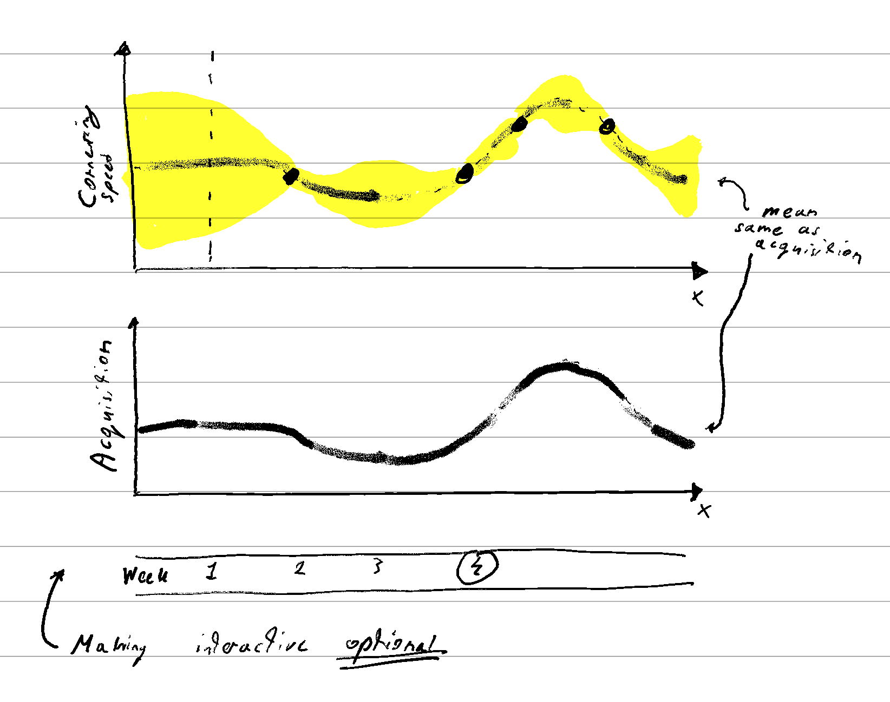
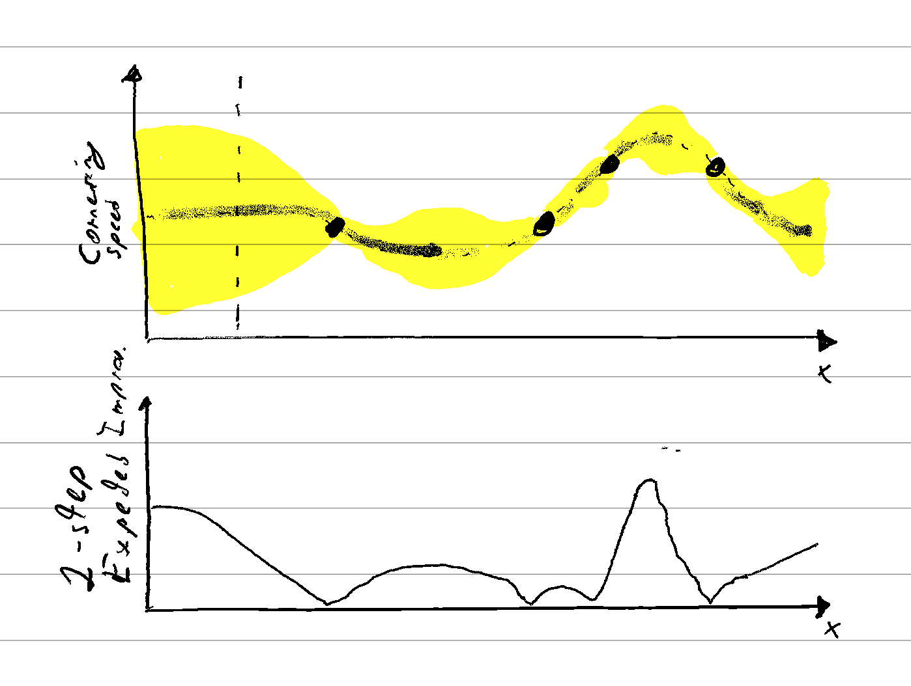

Bayesian Optimization
Akil Hashmi & Bruno Mlodozeniec
Draft
A Problem
Imagine you're on the engineering design team for a Formula One car. The team lead decided that redesigning the vehicle’s front wing may improve its cornering speed. A new shape has been proposed, however, the length of the front-wing, which can vary within the regulation constraints of 5cm - 50cm, is yet to be decided. Your job is to find the length of the wing that gives optimal performance as measured by the cornering speed the driver is able to achieve.
The challenge is: it is both expensive and slow to test new wing sizes. Each wing size prototype takes around a week to manufacture, install on the vehicle and get tested by the driver. There are only a few weeks left until the next Grand Prix, so you have limited time to find the best design.
This is a typical setting for Bayesian Optimization. In this problem, we're trying to optimize an objective function \(f(x)\) — the vehicle's on track performance — as a function of the front-wing length \(x\). Unfortunately, we don't know what that function looks like:
Since the objective function is expensive to evaluate — both in terms of time and manufacturing cost — we can only ever hope to observe the objective function at a limited number of points. Each evaluation is precious, we can't waste them.
For these reasons, we need an efficient testing strategy. The tools of Bayesian Optimization are designed to make optimal use of each of the tests in situations like this.
Before we get on to how they work, however, try to have a go at picking the points yourself. There are 5 weeks left until the next race – use the evaluations wisely:
We'll pick a new underlying function for you on each reset. We wouldn't want to make it too easy.
Using a model
There are multiple ways to approach picking which points to evaluate. We could try naively picking the points at random, or divide the design-space uniformly into a grid. However, both of these approaches would be suboptimal – they ignore the feedback which we sequentially receive from each experiment. To pick the next point, we want to utilise the information about which previously evaluated inputs turned out to be good, and which ones turned out to be bad. We want to focus our search on the most promising areas of the design space.
Instead of just picking front-wing lengths to test blindly, one of the central ideas of Bayesian optimization is to use a model for the data to inform that decision. A model would allow us to make predictions for the vehicle's cornering speed for wing lengths we haven't tested yet. The predictions can be a good proxy for what the most promising regions to explore might be.
By using a model, we could formulate an automated strategy. One such strategy might be: pick the front-wing that is predicted to give the highest expected cornering speed by the model.
You might have noticed, however, that there is an evident issue with that selection strategy.
Explore vs exploit - the need for exploration
Starting with the setup on the right, let's see what would happen if we strictly followed the "pick the point with the best expected cornering speed predicted by the model" strategy.
In this case, by picking the best point predicted by the model, the chosen point ends up being really close to the previously tried designs that turned out fairly well.
While doing so, we are completely ignoring other unexplored parts of the search-space where an even better design could be located. By applying this strategy repeatedly, we would only ever explore the region around the one local optimum we've found so far. We'd never discover the better optimum in the unexplored region.
There is clearly a trade-off between selecting inputs close to the best points observed so far (exploiting) and traversing the design-space in search of more prospective regions (exploring). This trade-off plays a central role in Bayesian Optimization.
As presented, there is a key missing component to our model that would allow us decide where to explore. Intuitively, we want to explore areas where we believe there is a high probability that the design could improve significantly upon the best one found so far. This can happen both in places where the model's mean prediction is high, or where the model's mean prediction is lower, but the uncertainty in that prediction is high. Even though the expected value at a given point might be low, if we are uncertain enough, there could be a significant probability that that point might turn out to be the best one we've seen so far.
To identify these high-risk high-reward regions we need to be able to evaluate a notion of uncertainty in each of model's predictions; we need a model that can give us a full predictive distribution over the possible values for the objective. A model for Bayesian Optimization ought to maintain a statistical picture of the function’s overall form given our observations of it.
Hence, a key component of Bayesian Optimization is the use of a probabilistic model. A probabilistic model simply keeps track of all the possible objective functions, and weights them according to how likely they are given the data seen so far. Predictions from such a model tell us not only the most likely outcome for a given input, but also the probability of each other outcome as well, and consequently helps us identify good regions to explore.
Gaussian Processes are one widely popular class of model for Bayesian Optimization of functions over continuous domains, like the one in this example. Weighing all the possible hypotheses to form a predictive distribution in Gaussian Processes can be done analytically, and hence Gaussian Processes are great for obtaining reliable uncertainty estimates.
To see what difference having the uncertainty estimates makes, give the optimization with a Gaussian Process model a go:
Exploring uncertainty
Decision Rule
So far, we discussed the tension between exploration and exploitation and the motivation for using a probabilistic model as a key component in Bayesian Optimization in order to help balance the two. Since Bayesian Optimization is an automatic approach to designing experiments, however, we're still clearly missing one component: a decision rule for selecting the next point.
Acquisition Functions
Typically, to guide experiment selection in Bayesian Optimization, one would define an acquisition function \(\alpha(x)\). In loose terms, the acquisition function would characterise how "good" a particular point \(x\) is as the next point to try out, i.e. how valuable it will be to observe the true objective in response to this input. If we had an expression for such an acquisition function, the next input \(x\) could then automatically be chosen as the input that maximises said acquisition function: \(x_{\text{next}}=\underset{x}{\operatorname{argmax}} \alpha(x)\). We could turn picking the next experiment into an optimization problem.
This might seem a bit ironic: in order to solve an optimization problem (finding the design maximising the objective \(x^*=\underset{x}{\operatorname{argmax}} f(x)\)) we introduced another one: maximising the acquisition function. The idea is that the acquisition function is (hopefully) much less expensive to evaluate than the true objective. In our Formula 1 example, evaluating the true objective necessitates manufacture of a component, which is time-consuming and monetarily costly. Evaluating the acquisition function requires only compute, and will hopefully be quick.
As an example, an acquisition function can express the naive selection rule of "picking the point with the best expected cornering speed" – the naive strategy we suggested before. At each step \(i\), we can define an acquisition function \(\alpha_i(x_i)\) that is equal to the expected predicted objective:
\[\alpha_i(x_i) = \mathbb{E}_{y_i|x_i, \mathcal{D}_i}\left[y_i\right]\] By maximising this acquisition function, we would be picking the point with the highest predicted objective just as before:
\(\class{gray}{\mathcal{D}_i=\big((x_1, y_1),}\)\(\class{gray}{\dots, (x_{i-1}, y_{i-1})\big)}\) are the data-points collected prior to \(i\)-th step.
TODO: Plot showing the simple acquisition function
We've seen the short-comings of this acquisition, which leads to the question: what is the right acquisition function? Starting from the goal of finding the best front-wing design, can we come up with an acquisition function that would lead us to the optimal rule for choosing the next length \(x\) to test? Let's try and do just that.
Optimal Acquisition Function
We can start by concretely formulating our problem. During the experimentation phase, we get to sequentially select \(N\) inputs \(x_i \in \mathbb{R}\), and observe the corresponding output \(y_i=f(x_i) \). At the end, after these trials are complete, we want to return a final recommendation for the optimal front-wing length \(x^*\). We'll assume that we have to recommend a design \(x^*\) from the set of wing lengths that were tested in the lab . On the race day, we require a tested design we have utmost confidence in.
Having defined our problem setup, let's also be precise about our goal. We can define a utility function \(U(x^*)\) that quantifies how good the final design is. Let's assume — for this problem — it is proportional to the cornering speed \(y^* = f(x^*)\). In other words: \[U(x^*) = y^* = f(x^*)\] To maximise this utility, we'd naturally want to report the best design we've found during our experimentation: \[x^*_{\text{final}} = x_{\class{light-red}{i^*}}\quad\text{ where }\class{light-red}{i^*}=\underset{i\in \{1,\dots, N\}}{\operatorname{argmax}} y_i\] To arrive at a general acquisition function, it helps to first consider the specific case when we're almost at the end of the design period; we only have time to test one last prototype before we must pick a design to be manufactured for the race. So far, we have tried front-wing lengths \((x_1, \dots, x_{N-1})\) and observed corresponding speeds \((y_1, \dots, y_{N-1})\). Given these, we can define the extra utility we would get from evaluating the last point at \(x_N\), and (hypothetically) observing a cornering speed \(y_N\):
\[\begin{align} \lambda_N &=\begin{cases} \class{light-purple}{y_N - \max\left(y_1, \dots, y_{N-1}\right)} & \class{dark-pink}{\text{if } y_N > \max\left(y_1, \dots, y_{N-1}\right)} \\[.5em] \class{black}{0} & \class{blue}{\text{if } y_N \leq \max\left(y_1, \dots, y_{N-1}\right)} \end{cases} \\ &=\max(\class{light-purple}{y_N - \max\left(y_1, \dots, y_{N-1}\right)}, \class{black}{0}) \end{align} \]Let's break this down. If the output \(y_N\) is better than the best design seen in the previous \(N - 1\) steps, \(x_N\) will be returned as the optimal design. The extra gain in utility of the final design will be \(\class{light-purple}{ y_N - \max (y_1, \dots, y_{N-1})}\). If the output \(y_N\) is not better than that of previous designs, the extra utility will be \(\class{black}{0}\), as one of the previous \(N-1\) designs will be returned.
We want to pick \(x_N\) as to maximise this increase in utility. Of course, a-priori, we don't know what the cornering speed \(y_N\) corresponding to a given design length \(x_N\) is going to be. Instead, we can maximise the expected improvement in the utility:
\[\mathbb{E}_{y_N|x_N, \mathcal{D}_N} [\lambda_N] = \mathbb{E}_{y_N|x_N, \mathcal{D}_N} [\max(y_N - \max\left(y_1, \dots, y_{N-1}\right), 0)]\]That is, we want to maximise the extra utility from observing \((x_N, y_N)\) averaged over the probability density of obtaining a particular output \(y_N\) in response to input \(x_N\). The formula for the expected improvement above then becomes our optimal acquisition function in the \(N\)-th step: \[\alpha_N(x_N)=\mathbb{E}_{y_N|x_N, \mathcal{D}_N} [\lambda_N]\]
We visualize this 1-step expected improvement below:
TODO: 1-step expected improvement visualisation
This acquisition function is also relatively easy to compute. We just need to take an expectation of a rather simple function with respect to \(y_N\) conditioned on the data we've seen so far. We can either use Monte-Carlo sampling, or in the case where the predictive distribution is a Gaussian distribution, a simple exact formula exists .
Optimal Acquisition Function with 2 steps left
What's then the optimal point to pick when there are \(2\) steps left? In a similar way, we can think about the expected extra utility in the steps following hypothetically picking a particular input \(x_{N-1}\) and observing some output \(y_{N-1}\). The contributions to this extra utility will come from two places. Firstly, from the immediate improvement from the output observed at step \(N-1\):
\[\lambda_{N-1}\overset{\small \operatorname{def}}{=}\max(y_{N - 1} - \max (y_1, \dots, y_{N-2}), 0)\]And, secondly, from the (1-step) expected improvement at step \(N\) (expected, since the outcome \(y_N\) is unknown): \[\mathbb{E}_{y_{N} \mid x_{N}, \mathcal{D}_{N}}\left[\lambda_{N}\right]\]
We'll assume that after the current \((N-1)\)-th step, we will pick the last input \(x_N\) optimally (why wouldn't we?) by maximising this expected improvement in the last step. Then, the total expected improvement from step \(N-1\) onwards (after observing a particular pair \((x_{N-1}, y_{N-1})\)) becomes:
\[ \underbrace{\lambda_{N-1}}_{\text{improvement in step }N-1} + \underbrace{\class{red}{\max_{x_N'}} \overbrace{\mathbb{E}_{y_N|\class{red}{x_N'}, \mathcal{D}_N} \left[\lambda_N\right]}^{\text{(1-step) expected improvement in step }N}}_{\text{optimal expected improvement in step }N} \\ \]Of course, at the point of picking \(x_{N-1}\), we again do not know the value of \(y_{N-1}\). To obtain the best possible outcome in expectation, we average out all the possibilities to arrive at the optimal acquistion function at step \(N-1\):
\[ \begin{align} \alpha_{N-1}(x_{N-1})=&\mathbb{E}_{y_{N-1}|x_{N-1}, \mathcal{D}_{N-1}}\left[\lambda_{N-1} + {\max_{x_N'}}\ \mathbb{E}_{y_N|{x_N'}, \mathcal{D}_N} \left[\lambda_N\right] \right]\\ =& \class{green}{\mathbb{E}_{y_{N-1}|x_{N-1}, \mathcal{D}_{N-1}} \left[ \lambda_{N-1}\right]} + \class{blue}{\mathbb{E}_{y_{N-1}|x_{N-1}, \mathcal{D}_{N-1}}\left[\max_{x_N'} \mathbb{E}_{y_N|{x_N'}, \mathcal{D}_N} \left[\lambda_N \right]\right]} \end{align} \] Math LegendNotation is ready to forget on a first read, so here are some helpers:
- \(\class{blue}{\lambda_i}\) - improvement in the maximimum observed objective at step \(i\): \(\max \left(y_{i}-\max \left(y_{1}, \ldots, y_{i-1}\right), 0\right)\)
- \(\class{blue}{\mathbb{E}_{y_{i} \mid x_{i}, \mathcal{D}_{i}}\left[\cdot\right]}\) - expectation with respect to the predicted output \(y_{i}\) at input \(x_{i}\) conditioned on all the data observed at step \(i\).
- \(\class{blue}{\mathcal{D}_i}\) - data observed at step \(i\): \(\big((x_1, y_1), \dots, (x_{i-1}, y_{i-1})\big)\)
Again, we arrived at an acqusition function that will give us the optimal decision when there are \(2\) steps remaining. This expression naturally decomposes into the sum of the immediate (1-step) expected improvement, and the expectation of the expected improvement in the next step. By optimizing the first term, we are trying to pick a point that is likely to improve the most upon the current best. By optimizing the second term, we are picking a point that will provide most useful information about the function in order to make the largest possible improvement in the step that follows. The \(2\)-step expected improvement balances the first myopic goal with the second far-sighted one.
The second term — the expectation of the expected improvement in the next step — warrants a closer look to get some intuition for it.
\[ \begin{align} &\class{blue}{\mathbb{E}_{y_{N-1} \mid x_{N-1}, \mathcal{D}_{N-1}}\Big[\max_{x_{N}^{\prime}} \mathbb{E}_{y_{N} \mid x_{N}^{\prime}, \mathcal{D}_{N}}\left[\lambda_{N}\right]\Big]}=\\ =& \underbrace{\int_{y_{N-1}\in \mathbb{R}}}_{1.} \underbrace{\left(\max_{x_{N}^{\prime}} \mathbb{E}_{y_{N} \mid x_{N}^{\prime}, \mathcal{D}_{N}}\left[\lambda_{N}\right]\right)}_{2.} \underbrace{p\left(y_{N-1}|x_{N-1}, \mathcal{D}_{N-1}\right) dy_{N-1}}_{3.} \end{align} \]This term says:
- \(1.\) Consider every possible value that the output \(y_{N-1}\) could hypothetically take in response to \(x_{N-1}\).
- \(2.\) For each of those values calculate the best 1-step expected improvement in the next step.
- \(3.\) Average those best 1-step expected improvements weighted by the probability of the hypothetical observations \(y_{N-1}\).
TODO: Only keep the top plot
The plot above shows (on the bottom axis) the \(2\)-step expected improvement broken down into the two components. The green part of the curve {match equation to plot or plot to equation} shows the immediate \(1\)-step expected improvement. The top part shows the expected improvement in the next step. This part is further sub-divided into contributions corresponding to each hypothetical observation of \(y_{N-1}\) at the current step. Each sub-part is equal to the best achievable expected improvement in the next step conditioned on a particular observation of \(y_{N-1}\) (hover over the plot to see which one), weighted by the probability of observing this particular value of \(y_{N-1}\). The plot also shows, for each hypothetical observation \(y_{N-1}\), the optimal input \(x_N\) that would be chosen at the next step.
To make this figure, we approximate the predictive distribution (which, in the figure, is a Gaussian) for \(y_{N-1}\) conditioned on \(x_{N-1}, \mathcal{D}_{N-1}\) with a discrete distribution. We do this, because it would have been impossible to make this figure if we considered every possible hypothetical value for \(y_{N-1}\), since \(y_{N-1}\) is continuous. We chose to discretise the distribution for \(y_{N-1}\) at \(5\) locations: at the mean, at the mean \(\pm 1\) standard deviation, and at the mean \(\pm 2\) standard deviations.
If you are particularly curious about the approximation, here are some more technical details: the probabilities for each of the \(5\) outcomes are assigned to be the closest possible match to the true predictive distribution, in the sense that the approximate distribution \(q\) minimises the KL-divergence to the true distribution \(p\): \[q=\underset{q^\prime}{\operatorname{argmin}} KL[q^\prime||p]\] This can done by making the weights be proportional to the probability density function of the true distribution at these locations (such that they still sum to \(1\)).
Computational Tractability
This acquisition is, however, already strikingly harder to compute numerically compared to the \(1-step\) expected improvement. No analytical solution is known even when the model's predictions are of a simple form (such as a Gaussian). To see clearly why, let's look at what we need to compute. We saw that the first term is just the \(1\)-step expected improvement, which is quite simple to compute; there ia a closed-form solution when \(y_{N-1}|x_{N-1}, \mathcal{D}_{N-1}\) is Gaussian-distributed. Hence, let's look closer at the second term and how to compute it, since that's the troublesome one:
\[\underbrace{\class{blue}{\mathbb{E}_{y_{N-1} \mid x_{N-1}, \mathcal{D}_{N-1}}\Big[}\underbrace{\class{blue}{\max_{x_{N}^{\prime}}} \overbrace{\class{blue}{\mathbb{E}_{y_{N} \mid x_{N}^{\prime}, \mathcal{D}_{N}}\left[\lambda_{N}\right]}}^{\text{I}}}_{\text{II}}\class{blue}{\Big]}}_{\text{III}}\] Here are the steps necessary to compute this quantity for a particular value of \(x_{N-1}\):- \(\text{I}\). This inner part is just a 1-step expected improvement. As mentioned before, this term is relatively simple to compute for any particular \(x^\prime_{N}\).
- \(\text{II}\). To compute this expression we need to (numerically) optimize the 1-step expected improvement expression from step \(\text{I}\) to find its maximum. This computation is equivalent to finding the maximum of the optimal acqusition function at the \(N\)-th step of the Bayesian Optimization procedure. Now, however, we need to perform this computation just to evaluate the optimal acquisition function at one point.
- \(\text{III}\). To compute this term we need to take the expectation of the quantity in \(\text{II}\). One obvious way to approximate this is to sample \(y_{N-1}|x_{N-1}, \mathcal{D}_{N-1}\) and average \(\text{II}\) over the drawn samples. The quantity \(\text{II}\) needs to be recomputed for every sample. Since computing this quantity was an optimization problem, this is rather computationally burdensome. In addition, there is also the overhead of updating the model with each hypothetical observation \(y_{N-1}\) before computing that quantity.
It's hopefully clear that this is computationally a pretty hard task. Well, ok, we did actually compute this \(2\)-step optimal acquisition function to make the interactive plot above, which (hopefully) runs in your browser. It's just-about tractable on this one-dimensional problem. Going beyond \(2\) steps, e.g. to compute \(3\)-step or \(4\)-step optimal acquisition functions gets intractable really fast though.
What actually makes a good acquistion function
On this note, we could continue this blog in a similar way to derive optimal acqusitions for when there are \(3\) steps left, \(4\) steps left, and so forth. These expressions will get exponentially harder and harder to compute, to the point where we wouldn't be able to use them in any practical problem, or plot them to get intuition for how they work.
So, in practice, a good acquisition function has to balance what's desirable from a theoretical point of view, with what's computationally tractable. Actually using the optimal acquisition function is rarely possible (except for the very last \(1\) or \(2\) steps of the optimization problem).
One common option is to use the acquisition function that's optimal for the last step — the \(1\)-step expected improvement — but at every step of the process. This obviously has downsides – an acquisition that at every step assumes it's the last step is unlikely to pick more "explorative" points that might be useful in the long run. On the other hand, it's computationally a very efficient approach.
For these reasons, many other acquisition functions and various ways to approximate them have been proposed in the literature. Some are motivated in other ways than the "decision-theoretic" motivation outlined in this blog. For instance, some are motivated from an information-theoretic perspective (e.g. ES, PES, MES), whilst other are being argued for on the basis of their asymptotic optimality (e.g. UCB). Yet other researcher will try to develop acquisitions for more specialised scenarios: for instance, some try to tackle the case when data is collected in batches rather a single example at a time, whilst others might consider the case when observations arrive asynchronously. The range of trade-offs considered and extensions to the Bayesian Optimization framework is broad. If you need convincing (or just want to see what's out there), this timeless survey paper — Taking the Human Out of the Loop — does a great job of covering a lot.
The goal of this blog was really to get at the core of what Bayesian Optimization is: an automated approach to tackling design problems – problems where we want to optimize for something in the face of uncertainty. We wanted to highlight how probabilistic reasoning (the "Bayesian" part of Bayesian Optimization) helps us to deal with the "uncertainty" bit, i.e. how it allows us to reason over the possible future observations to help us find a point close to the maximum the quickest.
Later blog sections
TODO: Delete? I think none of these are necessarily still relevant